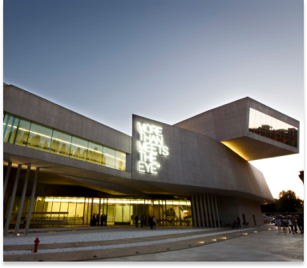

Intérieur du MAXXI à Rome, Italie

Intérieur du Guangzhou Opera House à Guangzhou, Chine
Inauguré en 2010, ce musée d'art contemporain et d'architecture incarne l'avant-garde et l'innovation. Les lignes
dynamiques et les formes organiques de la structure créent un espace artistique avant-gardiste, offrant une toile unique
pour l'exposition d'œuvres contemporaines.

Extérieur du MAXXI à Rome, Italie
Le MAXXI, en tant que chef-d'œuvre culturel, devient un lieu de convergence entre l'art, l'architecture et le public. En
explorant ce musée exceptionnel, les visiteurs sont invités à découvrir l'imagination sans limites de Zaha Hadid et son
impact sur le paysage culturel de Rome.
Intérieur du MAXXI à Rome, Italie